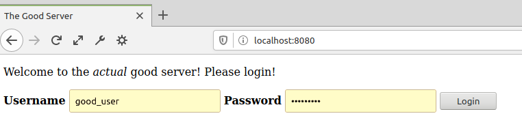
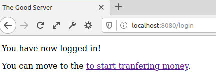
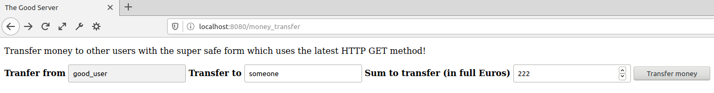
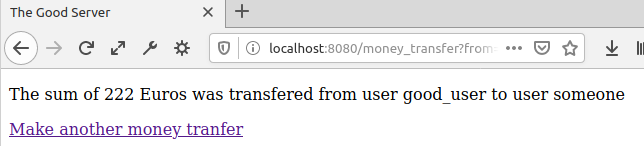
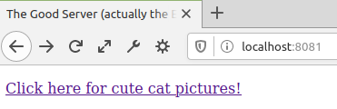

Cross-Site Request Forgery (CSRF)
Exercise overview
There are two server implementations in this directory. The Good Server in good_server.js developed by you, and the Evil Server in evil_server.js developed by a bunch of no-good villains. Your Good Server provides a service for transferring money
between users, but is open to CSRF attacks. Evil Server takes advantage of this. How evil and absolutely-not-cool of them! 🙁
In the exercise you get be a force for Good by implementing a simple CSRF token based security mechanism to stop Evil Server developers from succeeding in their naughtiness.
You should read up on CSRF using the course material. Examples of other valuable resources are
OWASP's
CSRF page and Understanding CSRF
Implementing the exercise
Start by making sure you are in your local clone of the Git repository, and in its
exercises/7.4-csrf directory where this instructions.html file is placed. Then:
- There are two files each implementing its own server in this directory: good_server.js (the Good Server) and evil_server.js (the Evil Server)
- The Good Server has been configured to run on port 3000 of the localhost, while the Evil Server runs on port 3001
- Both the Good Server and the Evil Server can be run in separate terminals. Running
node good_server.js
in one terminal and
node evil_server.js
in another should do the trick.
- You will write your code in this exercise by modifying the existing good_server.js file in this directory
- Write your code based on the TODOs in the good_server.js file and these looooong instructions
How the Good Server functions
- Make sure that both servers are running
- Navigate your browser to localhost:3000, and you should see a landing page that looks like this:
.
The page is from the file
good_server.html.
- The required login credentials for the only user in the system are defined in the users array of the good_server.js. The username is good_user and the password is good_pass. Enter them on the landing page and click the
"Login" button
- If you enter the right login credentials, you should be directed to a page that looks something like this:
.
The page is defined as a template literal in good_server.js file.
- When looking at the code in good_server.js, it can be seen that after successful login a cookie is set. This cookie is named secret_for_good_server, and it is used to identify the user which has logged in the later communication between the browser
and the server.
- You can now click the "transferring money" link on the page
- You should be directed to a page which looks something like:
.
The page is defined as a template literal in good_server.js file. You can enter any value
in to the "Transfer to" field. Field "Sum to transfer (in full Euros)" can be any positive integer. Both fields are mandatory. After filling the fields click "Transfer money" button.
- After the transfer is complete, you are should see a page like:
.
The page is defined as a template literal in good_server.js file.
- New money transfers can be done without logging in again, as long as the set cookie exists
How the Evil Server functions
- Make sure that both servers are running
- Navigate to localhost:3001. You should see a page that is similar to:

- To keep the exercise focused and performed attack obvious, Evil Server is extremely simple: it just serves a single page with a single link. But the link is full of evil with a side of CSRF attack! Looking at the link, it sends a request to the
Good Server which transfers money to the evil_user from the user, who has previously logged in to the Good Server. This logged-in user is identified by the Good Server based on only on the browser cookie, so Evil Server can exploit this poor,
innocent cookie.
- After clicking the link on the Evil Server user is directed to money transfer page on the Good Server informing the user that money has been transfered from them to the user evil_user
- There are other ways of exploiting CSRF vulnerabilities, that would be less obvious, but in this exercise showing the attack explicitly is wanted
- The CSRF attack works, as by default the browser sends all the cookies that have been set with every request. As a sidenote: browsers' behavior can be modified on per cookie basis by setting certain values for the cookie, see MDN's
Set-Cookie page.
What you need to do: mitigate the CSRF attack
- Mitigating CSRF attacks can be done by adding a hidden field to forms. The value for this field is set on the Good Server to a unique value for each request. The value needs to be unique so that attackers can't guess it
- The values for CSRF tokens need to be saved so that they can be checked for each request, and tokens need to be removed when they have been checked.
- In this exercise you need implement the TODOs in the good_server.js file to implement this mitigation
Submitting your work
- Commit your good_server.js file, and push it to your Git repository.
- Submit your work in Plussa